自定义多数据源
准备
依赖：
- Web
- Spring Web
- SQL
- MyBatis Framework
- MySQL Driver
配置文件
# 数据源配置
spring:
datasource:
type: com.alibaba.druid.pool.DruidDataSource
driverClassName: com.mysql.cj.jdbc.Driver
ds:
# 主库数据源
master:
url: jdbc:mysql://localhost:3306/test01?useUnicode=true&characterEncoding=utf8&zeroDateTimeBehavior=convertToNull&useSSL=true&serverTimezone=GMT%2B8
username: root
password: wqeq
# 从库数据源
slave:
# 从数据源开关/默认关闭
url: jdbc:mysql://localhost:3306/test02?useUnicode=true&characterEncoding=utf8&zeroDateTimeBehavior=convertToNull&useSSL=true&serverTimezone=GMT%2B8
username: root
password: wqeq
# 初始连接数
initialSize: 5
# 最小连接池数量
minIdle: 10
# 最大连接池数量
maxActive: 20
# 配置获取连接等待超时的时间
maxWait: 60000
# 配置间隔多久才进行一次检测，检测需要关闭的空闲连接，单位是毫秒
timeBetweenEvictionRunsMillis: 60000
# 配置一个连接在池中最小生存的时间，单位是毫秒
minEvictableIdleTimeMillis: 300000
# 配置一个连接在池中最大生存的时间，单位是毫秒
maxEvictableIdleTimeMillis: 900000
# 配置检测连接是否有效
validationQuery: SELECT 1 FROM DUAL
testWhileIdle: true
testOnBorrow: false
testOnReturn: false
webStatFilter:
enabled: true
statViewServlet:
enabled: true
# 设置白名单，不填则允许所有访问
allow:
url-pattern: /druid/*
# 控制台管理用户名和密码
login-username: tienchin
login-password: 123456
filter:
stat:
enabled: true
# 慢SQL记录
log-slow-sql: true
slow-sql-millis: 1000
merge-sql: true
wall:
config:
multi-statement-allow: true步骤
- 自定义一个注解@DataSource,将来可以将该注解加service层在方法或者类上面，表示方法或者类中的所有方法都使用某一个数据源
- 对于第一步，如果某个方法上面有@DataSource注解，那么就将该方法需要使用的数据源名称存入ThreadLocal。
- 自定义切面，在切面中解析@DataSource注解的时候，将@DataSource注解所标记的数据源存入到ThreadLocal中。
- 最后，当Mapper执行的时候，需要DataSource，他会自动去AbstractRoutingDataSource类中查找需要的数据源，我们只需要在AbstractRoutingDataSource中返回ThreadLocal中的值
综上：用@DataSource注解，在一个方法或者一个类上面，去标注你想使用哪个数据源。然后将来在这个AOP(切面)里面解析这个注解，把想使用的数据源的名字找出来，存在ThreadLocal里面去。当以后真正需要用的时候，人家会自动的从AbstractRoutingDataSource里面去查找需要的数据源。
所以，我们要做的就是：重写（自己写一个类继承）AbstractRoutingDataSource，然后在它的方法里面去返回ThreadLocal里边所存储的数据源的名字。最后它会根据名字找到对应的数据源
步骤1：@DataSource
自定义一个注解@DataSource,将来可以将该注解加service层在方法或者类上面，表示方法或者类中的所有方法都使用某一个数据源
import java.lang.annotation.ElementType;
import java.lang.annotation.Retention;
import java.lang.annotation.RetentionPolicy;
import java.lang.annotation.Target;
@Retention(RetentionPolicy.RUNTIME)
@Target({ElementType.TYPE,ElementType.METHOD})
public @interface DataSource {
String value();
}步骤2：DynamicDataSourceContextHolder
对于第一步，如果某个方法上面有@DataSource注解，那么就将该方法需要使用的数据源名称存入ThreadLocal。
/**
* 这个类用来存储当前线程所使用的的数据源名称
*/
public class DynamicDataSourceContextHolder {
private static ThreadLocal<String> CONTEXT_HOLDER = new ThreadLocal<>();
public static void setDataSourceType(String dsType){
CONTEXT_HOLDER.set(dsType);
}
public static String getDataSourceType(){
return CONTEXT_HOLDER.get();
}
/**
* ThreadLocal里面的数据用完之后记得把它清空掉，不然这个线程去搞其他事情，就容易发生内存溢出【泄漏】
*/
public static void clearDataSourceType(){
CONTEXT_HOLDER.remove();
}
}步骤3：DataSourceAspect
自定义切面，在切面中解析@DataSource注解的时候，将@DataSource注解所标记的数据源存入到ThreadLocal中。
用到了切面，自然需要引入AOP的依赖
<dependency>
<groupId>org.springframework.boot</groupId>
<artifactId>spring-boot-starter-aop</artifactId>
</dependency>【注】学习一下，如何拿到注解里的值
import com.lcdzzz.dd.annotation.DataSource;
import com.lcdzzz.dd.datasource.DynamicDataSourceContextHolder;
import org.aspectj.lang.ProceedingJoinPoint;
import org.aspectj.lang.annotation.Around;
import org.aspectj.lang.annotation.Aspect;
import org.aspectj.lang.annotation.Pointcut;
import org.aspectj.lang.reflect.MethodSignature;
import org.springframework.core.annotation.AnnotationUtils;
import org.springframework.stereotype.Component;
@Component
@Aspect
public class DataSourceAspect {
/**
* @annotation(com.lcdzzz.dd.annotation.DataSource) 表示如果方法上有@DataSource 注解，就把方法拦截下来
* @within(com.lcdzzz.dd.annotation.DataSource) 表示如果类上面有这个注解，那么就将类中的方法拦截下来
*/
//定义切点
@Pointcut("@annotation(com.lcdzzz.dd.annotation.DataSource) || @within(com.lcdzzz.dd.annotation.DataSource)")
public void pc(){
}
//环绕通知
@Around("pc()")
public Object around(ProceedingJoinPoint pjp){
//获取方法上面的有效注解
DataSource dataSource=getDataSource(pjp);//获取自己的DataSource注解
if (dataSource!=null){
String value=dataSource.value();//获取注解里面数据源的名称
DynamicDataSourceContextHolder.setDataSourceType(value);
}
try {
return pjp.proceed();
} catch (Throwable throwable) {
throwable.printStackTrace();
} finally {
DynamicDataSourceContextHolder.clearDataSourceType();//数据源清除
}
return null;
}
//pjp里面有当前的方法的信息。核心思路：现在方法上面找，没有找到再到类上面找
private DataSource getDataSource(ProceedingJoinPoint pjp) {
MethodSignature signature = (MethodSignature) pjp.getSignature();
//查找方法上的注解,AnnotationUtils是spring提供的注解操作工具类
DataSource annotation = AnnotationUtils.findAnnotation(signature.getMethod(), DataSource.class);
if (annotation!=null){//说明方法上有@DataSource注解
return annotation;
}
//signature.getDeclaringType(),DataSource.class意思是获取这个方法所在的类的类型，然后看他上面有没有@DataSource注解
return AnnotationUtils.findAnnotation(signature.getDeclaringType(),DataSource.class);
}
}步骤4
最后，当Mapper执行的时候，需要DataSource，他会自动去AbstractRoutingDataSource类中查找需要的数据源，我们只需要在AbstractRoutingDataSource中返回ThreadLocal中的值
DruidProperties
@ConfigurationProperties(prefix ="spring.datasource" )//类型安全的属性注入
public class DruidProperties {
private String type;
private String driverClassName;
private Map<String,Map<String,String>> ds;
private Integer initialSize;
private Integer minIdle;
private Integer maxActive;
private Integer maxWait;
/**
* 一会在外部构造好一个 DruidDataSource 对象，但是这个对象只包含三个核心属性：url username password
* 在这个方法中，给这个对象设置公共属性
* @param druidDataSource
* @return
*/
public DataSource dataSource(DruidDataSource druidDataSource){
druidDataSource.setInitialSize(initialSize);
druidDataSource.setMinIdle(minIdle);
druidDataSource.setMaxActive(maxActive);
druidDataSource.setMaxWait(maxWait);
return druidDataSource;
}
/**
省略getset方法
*/LoadDataSource
定义一个类去加载所有的数据源
@Component
@EnableConfigurationProperties(DruidProperties.class)
public class LoadDataSource {
@Autowired
DruidProperties druidProperties;//需要用DruidProperties里面的ds属性
public Map<String, DataSource> loadAllDataSource(){
Map<String,DataSource> map=new HashMap<>();
Map<String, Map<String, String>> ds = druidProperties.getDs();
try {
Set<String> strings = ds.keySet();
for (String key : strings) {//key是数据源的名字，value是数据源的各种信息
map.put(key, druidProperties.dataSource((DruidDataSource) DruidDataSourceFactory.createDataSource(ds.get(key))));//根据value创建一个数据源
}
} catch (Exception e) {
e.printStackTrace();
}
return map;
}
}DynamicDataSource【核心！】
当Mapper执行的时候，需要DataSource，他会自动去AbstractRoutingDataSource类中查找。这里继承的就是AbstractRoutingDataSource类
框架会调用determineCurrentLookupKey来获取数据源的名称，并且这个方法获取到的数据，会存到DynamicDataSourceContextHolder里面去。
因此，如果设计一个按钮，可以把DynamicDataSourceContextHolder里的数据修改了，就可以达到手动在网页上切换数据源的功能，请看一级标题：【手动实现网页上切换数据源】
@Component
public class DynamicDataSource extends AbstractRoutingDataSource {
public DynamicDataSource(LoadDataSource loadDataSource) {
//1.设置所有的数据源
Map<String, DataSource> allDs = loadDataSource.loadAllDataSource();
super.setTargetDataSources(new HashMap<>(allDs));
//2.设置默认的数据源
//将来，并不是所有的方法上都有@DataSource注解，对于那些没有@DataSource注解的方法，该使用哪个数据源
super.setDefaultTargetDataSource(allDs.get(DataSourceType.DEFAULT_DS_NAME));
//3.
super.afterPropertiesSet();
}
/**
* 这个方法用来返回数据源名称，当系统需要获取数据源时，会自动调用该方法获取数据源的名称
* @return
*/
@Override
protected Object determineCurrentLookupKey() {
return DynamicDataSourceContextHolder.getDataSourceType();
}
}DataSourceType
把默认的数据源名称设置为常量
public interface DataSourceType {
String DEFAULT_DS_NAME="master";
}测试
实现准备两个数据源【方便起见就是两个数据库，名为test01和test02】

最后再测试类中使用测试，代码就是常见的mapper中写sql语句，serivce层调用，最后测试类使用service层的方法测试。
测试结果：不同名称的数据源，会查找对应不同的数据库，内容也有所不同
sql文件如下，意思意思
SET NAMES utf8mb4;
SET FOREIGN_KEY_CHECKS = 0;
-- ----------------------------
-- Table structure for user
-- ----------------------------
DROP TABLE IF EXISTS `user`;
CREATE TABLE `user` (
`id` int(0) NOT NULL,
`username` varchar(255) CHARACTER SET utf8mb4 COLLATE utf8mb4_general_ci NULL DEFAULT NULL,
`age` int(0) NULL DEFAULT NULL,
PRIMARY KEY (`id`) USING BTREE
) ENGINE = InnoDB CHARACTER SET = utf8mb4 COLLATE = utf8mb4_general_ci ROW_FORMAT = Dynamic;
-- ----------------------------
-- Records of user
-- ----------------------------
INSERT INTO `user` VALUES (1, 'lcdzzz', 22);
SET FOREIGN_KEY_CHECKS = 1;
总结
自定义数据源的使用分为两种情况
用@DataSource注解
@DataSource 没有参数，默认用下面定义的
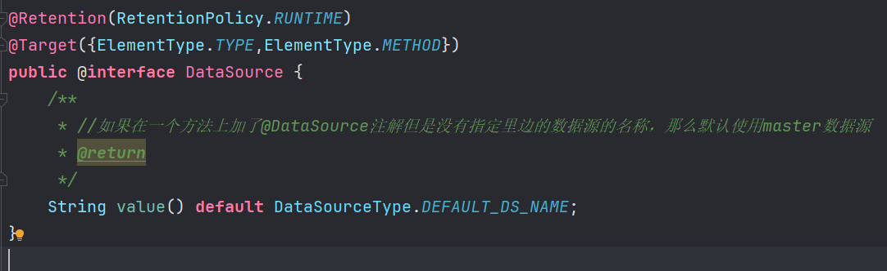
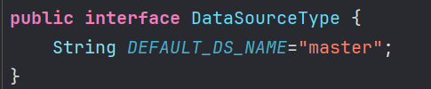
@DataSource 有参数，就用改参数名字的数据源
@DataSource("slave")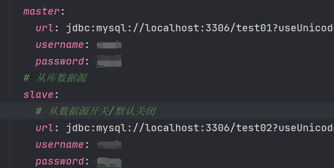
不用@DataSource注解
默认使用master
不用@DataSource，和用了但是没有加参数，两者都是“默认”，但是在逻辑是有区别
不用@DataSource时，是在这里上默认的
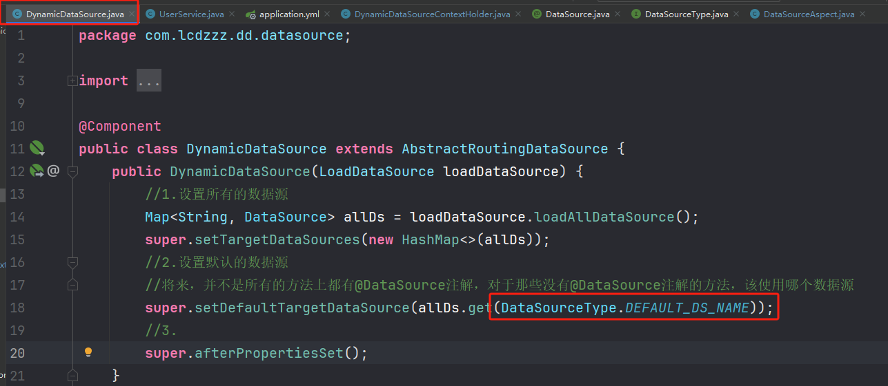
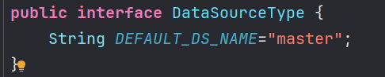
用了但是没有加参数，是在这里上默认的
ps：idea 导出项目结构树：
- 输入命令：
tree >> E:\workTreeTemp\tree.txt
ruoyi脚手架的写法
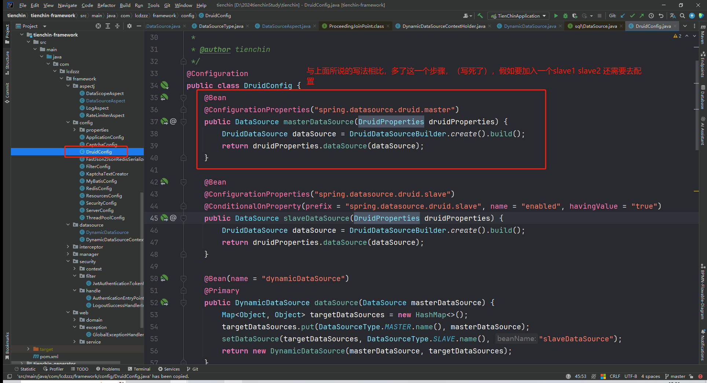
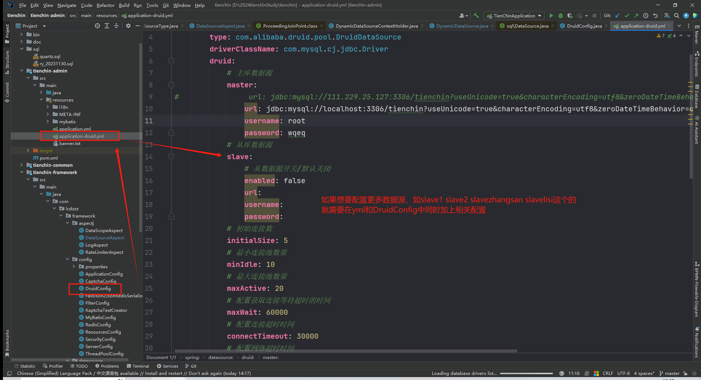
联系如下
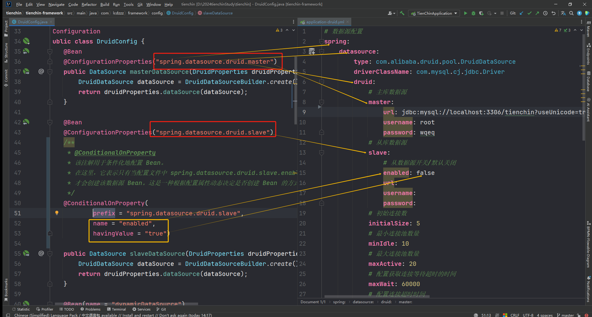
然后之前的写法是不用这样的，在步骤4中的DynamicDataSource中已经把所有的数据源读进来了【相比之下ruoyi写法没有这么灵活】
拓展：手动实现网页上切换数据源
步骤1：controller.DataSourceController
setDsType目的是打日志，真正有作用的是存在session里面的数据源名字
getAllUser为测试接口，测试数据源是否真的改变。方便起见，讲从数据库select出来的数据直接打印到控制台
package com.lcdzzz.dd.controller;
import com.lcdzzz.dd.datasource.DataSourceType;
import com.lcdzzz.dd.model.User;
import com.lcdzzz.dd.service.UserService;
import org.slf4j.Logger;
import org.slf4j.LoggerFactory;
import org.springframework.beans.factory.annotation.Autowired;
import org.springframework.web.bind.annotation.GetMapping;
import org.springframework.web.bind.annotation.PostMapping;
import org.springframework.web.bind.annotation.RestController;
import javax.servlet.http.HttpSession;
import java.util.List;
@RestController
public class DataSourceController {
private static final Logger logger = LoggerFactory.getLogger(DataSourceController.class);
@Autowired
UserService userService;
/**
* 修改数据源
* @param dsType
*/
@PostMapping("/dstype")
public void setDsType(String dsType, HttpSession session){//修改后存入session中去，与当前会话绑定，这样一来当前整个会话都可以统一使用这个数据源了
session.setAttribute(DataSourceType.DS_SESSION_KEY,dsType);
logger.info("数据源切换为 {}",dsType);
}
@GetMapping("/users")
public List<User> getAllUser(){
List<User> allUsers = userService.getAllUsers();
allUsers.forEach(System.out::println);
return allUsers;
}
}
步骤2：aspect.GlobalDataSourceAspect.java
和之前的DataSourceAspect一样，定义切面
【注】@Order值越小，优先级越高。但这里值得注意的是，优先级越低的，越后面执行；后面执行的，就能覆盖前面的。所以优先级越低的，才是最后真正起作用的那个。
这里定义的切点不是像之前的一样的在注解@DataSource上了。归根结底，手动实现网页上切换数据源关联的是一个service层的一个方法，所以切点应该设置如下。
环绕通知，拦截下来，设置最新（从session中）得到的数据源
package com.lcdzzz.dd.aspect;
import com.lcdzzz.dd.datasource.DataSourceType;
import com.lcdzzz.dd.datasource.DynamicDataSourceContextHolder;
import org.aspectj.lang.ProceedingJoinPoint;
import org.aspectj.lang.annotation.Around;
import org.aspectj.lang.annotation.Aspect;
import org.aspectj.lang.annotation.Pointcut;
import org.springframework.beans.factory.annotation.Autowired;
import org.springframework.core.annotation.Order;
import org.springframework.stereotype.Component;
import javax.servlet.http.HttpSession;
@Aspect
@Component
@Order(10)
public class GlobalDataSourceAspect {
@Autowired
HttpSession session;
@Pointcut("execution(* com.lcdzzz.dd.service.*.*(..))")
public void pc(){
}
@Around("pc()")
public Object around(ProceedingJoinPoint pjp){
//变化：原来从@DataSource注解里面找的，现在从session里面找了
DynamicDataSourceContextHolder.setDataSourceType((String) session.getAttribute(DataSourceType.DS_SESSION_KEY));
try {
return pjp.proceed();//让被拦截的方法继续往下走
} catch (Throwable throwable) {
throwable.printStackTrace();
} finally {
DynamicDataSourceContextHolder.clearDataSourceType();
}
return null;
}
}
与此同时，为了让两种设置数据源的方法有合理的先后顺序,要在@DataSource直接上给11，在GlobalDataSourceAspect给10。达到的效果就是，全局，即先以全局手动设置的数据源为准，若某个service层的方法用了@DataSource注解，就以注解定义的为准
@Order(11)
public class DataSourceAspect {步骤3：简单写一个网页
loadData()是讲select出来的数据显示在网页上，但是不知道为什么我这里不行，应该是JSON转换的原因，不过这个不是本篇的重点，所以把它打印在控制台也行。
dsChange(value)是为了把选择的数据源名，打印出来。
<!DOCTYPE html>
<html lang="en">
<head>
<meta charset="UTF-8">
<title>Title</title>
<script src="jquery-3.6.0.js"></script>
</head>
<body>
<div>
请选择数据源
<select name="" id="" onchange="dsChange(this.options[this.options.selectedIndex].value)"><!--this.options[]是个数组，
【.value】是取值-->
<option value="请选择">请选择</option>
<option value="master">master</option>
<option value="slave">slave</option>
</select>
</div>
<div id="result" ></div>
<button onclick="loadData()">加载数据</button>
<script>
function loadData(){
$.get("/users",function (data){
$("#result").html(JSON.stringify(data));
})
}
function dsChange(value) {
$.post("/dstype",{dsType:value})
}
</script>
</body>
</html>用jQuery，这里就不放上来了，而且因为是简单的用，直接把文件复制过来即可。jQuery地址：https://code.jquery.com/jquery-3.6.0.js
目录结构：
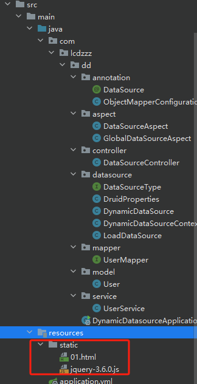
测试
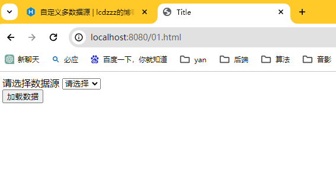
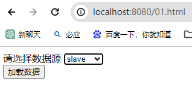
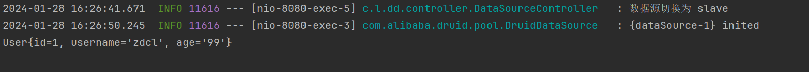
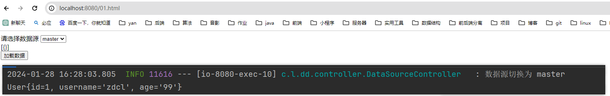